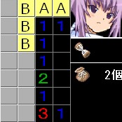

地雷があるマスを想定した結果、余ったマスは安全という考え方。

上の画像で、右端に接してる１から、Ａのどちらかに地雷があるのがわかる。
さらに隣の１を見ると、Ａのどちらかに地雷があるのだから、消去法でＢの部分には地雷が無い事がわかる。
消去法１と逆の考え。地雷があるマスを想定した結果、余ったマスは地雷という考え方。
上の画像で、旗の左にある２から、Ａのどちらかに地雷があると考えられる。
それを踏まえて隣の２を見ると、Ａのどちらかに地雷が１つしかないのだから、Ｂの部分には地雷が無くてはいけない。よって、Ｂは地雷である。
消去法１をもう少し発展させる。
上の画像で、右端に接してる１から、Ａのどちらかに地雷があると考えられる。また、上端に接してる１から、Ｂのどちらかにも地雷があると考えられる。
ここで、中央の２は、ＡのエリアもＢのエリアもカバーしており、さらにこのＡとＢの４つの内どこか２つが地雷である事が確定している。
この事から、Ｃの部分には地雷が無く、安全に開けられる事がわかる。
開けた場所にある２とその隣にある１から、開けられるマスが確定する法則。
上の画像のような開けた場所に1.2がある場合を考える。
まず、ここでＣの前の２から想定される地雷の配置パターンを考えてみる。
ここで、Ⅰの配置は、2の隣にある１の条件に矛盾する。すなわち、考えられる地雷配置パターンはⅡ、Ⅲのどちらか。
また、Ⅱ、Ⅲの配置では「Ｄが地雷」、「Ａが安全マス」という事が共通している。
この事から、Ｄには地雷があり、Ａは開けられる。

つまり１・２の法則は、１・２が開けた場所で接している場合、２の斜め前（１とは反対方面）のマスが地雷で、１の斜め前（２とは反対方面）のマスが安全になるという法則である。
また下のように１が開けた場所に無い場合でも、２が開けた場所にあれば１・２の法則は適用できる。
１・２の法則で旗のある場所が確定する。この時、右側中央の２からＡのマスのどちらかに地雷がある事がわかる。
それを踏まえてその上の１を見ると、消去法を使ってＢの部分には地雷が無い事がわかる。
１・２の法則の発展型。１・２の法則をマスターしていいれば覚えなくても導ける。
上の画像で中央の２を軸に、左右の１で「１・２」、「２・１」の形で１・２の法則を適用し、地雷の位置を割り出す。
開けられる部分を開ける。
このように１・２・１と並んでいる場合、１の前が地雷で、２の前は安全という形が出来あがる。
１・２の法則の発展型。１・２の法則をマスターしていいれば覚えなくても導ける。
上の画像で中央の「１・２」と並んでる部分と「２・１」と並んでいる部分にそれぞれ１・２の法則を使って地雷の位置を割り出しせる。
開けられる部分を開ける。
このように１・２・２・１と並んでいる場合、２の前が地雷で、１の前は安全という形が出来あがる。